I lead design for an innovative learning platform.
2015–
I work for Ellucian, the creator of higher-education software used by more than 2,400 colleges and universities in the US and abroad. I focus on Ellucian’s newest offering, Brainstorm, a learning platform for the growing movement known as Competency-Based Education. Brainstorm is built for self-paced courses that include substantive interaction with an instructor — increasingly seen as the ideal way for adult students in many disciplines to learn.
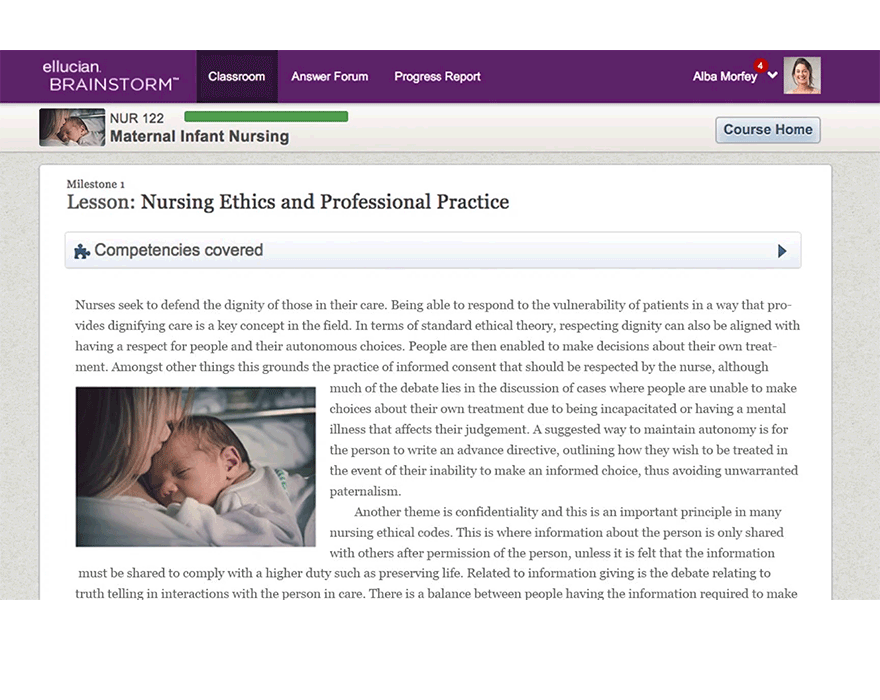
One of my first assignments was to update Brainstorm’s visuals. A sample screen as I inherited it and as it is now are shown in the animated reveal to the left. There were plenty of technical challenges — across dozens of page layouts and page elements, changes had to be almost entirely limited to CSS. Building a consensus around a new visual direction is always a feat of persuasion, but I managed it, and the end result has had a very positive reception internally and externally.
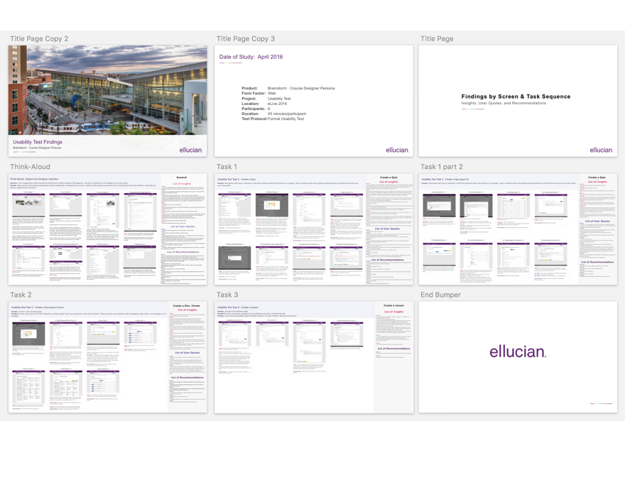
UX has been as much a part of my job as UI detailing. Ellucian believes strongly in user testing to ensure an excellent user experience, and in spring 2016 the 30-person UX department organized a large-scale, in-person testing effort. I conducted eight scripted tests for my product. I analyzed and shared my results, including screen-by-screen observations supported by user quotes. I made recommendations for improvement, and we have implemented a number already.
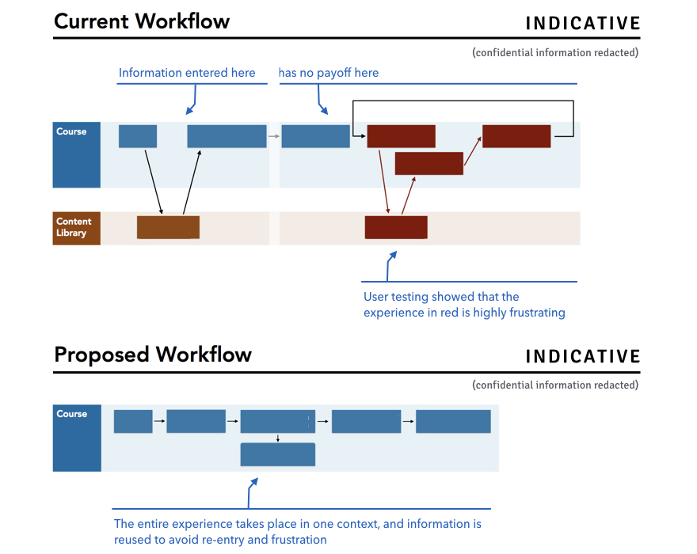
One focus of the user testing was a complex workflow that we found did stymie users. I proposed a radical simplification that is still being detailed out. The graphics to the left indicate how I presented the problem and solution to internal stakeholders to raise awareness, gather feedback, and build consensus for a fix.
My work at Ellucian has also included new product features, refinements, and special projects — including a big one around responsive design.
My work at Ellucian has also included new product features, refinements, and special projects — including a big one around responsive design.
I helped a company scale from one learning object to tens of thousands.
2014–2015
Digital diagrams, maps, and galleries can offer rich educational experiences by chunking out concepts and responding to student interest in ways paper illustrations just can’t. Pearson, recognizing this, engaged the agency I worked for to create hundreds of small interactives for higher-education textbooks. My work designing and coordinating the development of these interactives led to a huge ramping-up of our work for Pearson and other publishers, and to my promotion to management.
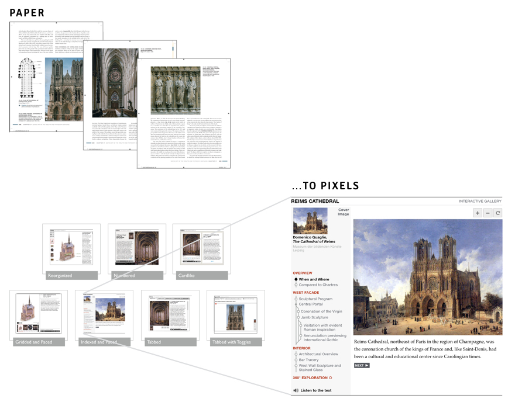
We began the design of each “widget” by discussing the figure from the printed textbook with Pearson editors. Sometimes, as in the case of an art history gallery, they then requested multiple ideas for a “widget.” My team and I produced seven concepts for using interactivity to weave together image and description. In the enlarged scheme, I sought to include a “concept map” at the left, showing the student how each image in the gallery related to the others.
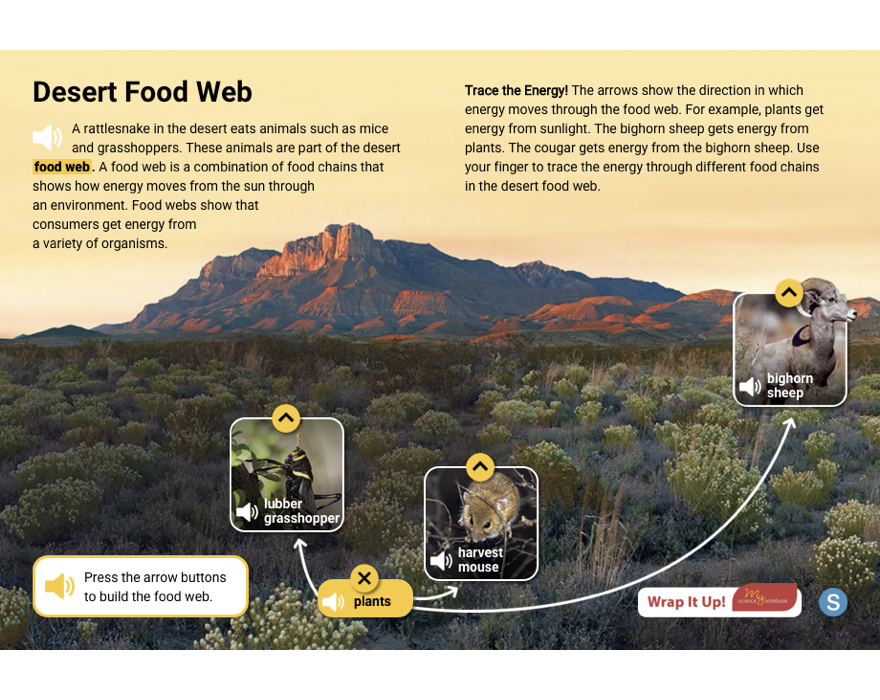
My team, which grew to 14 people, tackled a variety of projects, including this National Geographic Learning K-5 science textbook. We overcame major challenges around accessibility, localization, codebase versioning, and e-reader compatibility.
Throughout, I also worked on conference samples and client pitches, including the one for this project, and once engaged, clients knew me as a primary point of contact.
Throughout, I also worked on conference samples and client pitches, including the one for this project, and once engaged, clients knew me as a primary point of contact.

Eventually Metrodigi’s work for Pearson became so extensive that we needed to scale our operations. I led our team in creating a private web app that allowed us to track thousands of interactives across dozens of titles. We included workflow tools so that authors and editors could input material for now-standardized interactive types, and eventually we offered a WYSIWYG interface so interactives could be created by the client without our committing developer time. We ultimately outproduced and outcompeted our better-funded rival, Inkling.
I designed & built a new kind of diabetes management app.
2010–
I set out with my cofounder, a person with Type 1 Diabetes since childhood, to create a medical app with a uniquely warm look and feel, redolent of relaxation and entertainment. It’s inviting and super-efficient — a circular control works for each step in the data entry a person with diabetes needs to do every day. With fun animations and sounds, it’s the quickest and pleasantest way to log data and stay healthy.
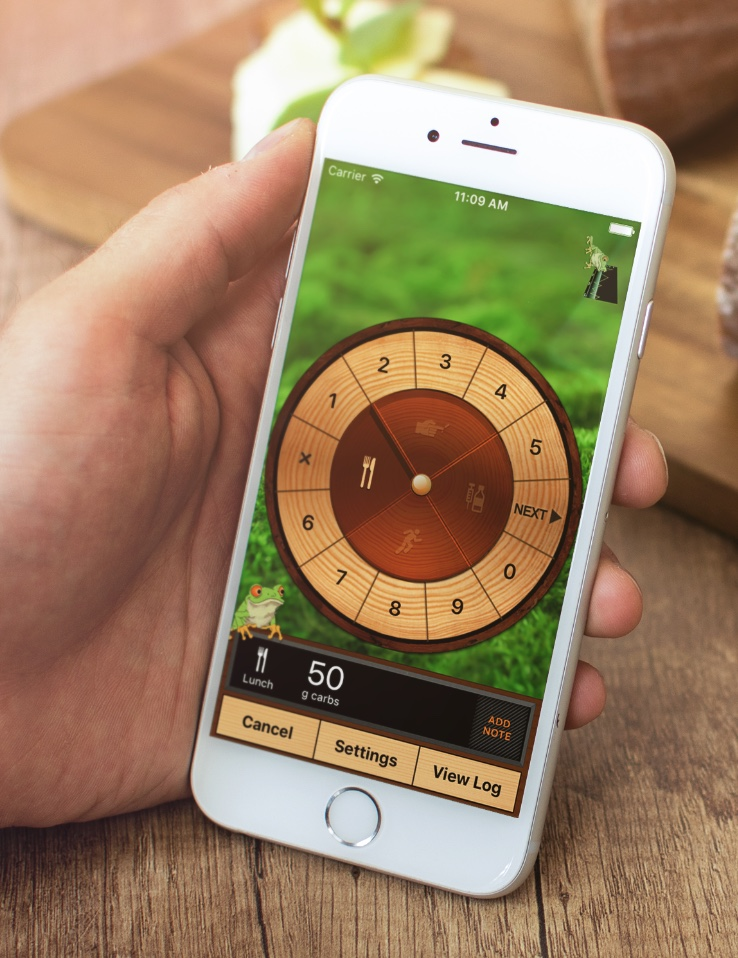
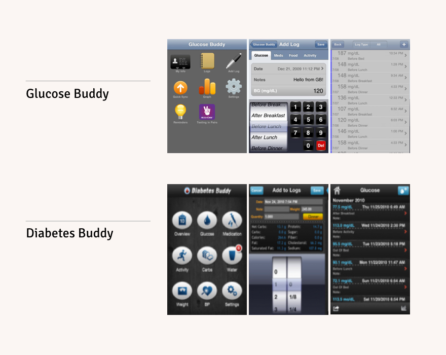
Our predecessors in the App Store hewed to very traditional user interfaces. They look like paper log books made interactive through businesslike data-input controls.
To my cofounder and me, they felt like a dismal place for people with a difficult condition to have to spend hours each week logging and reviewing health-related data.
To my cofounder and me, they felt like a dismal place for people with a difficult condition to have to spend hours each week logging and reviewing health-related data.
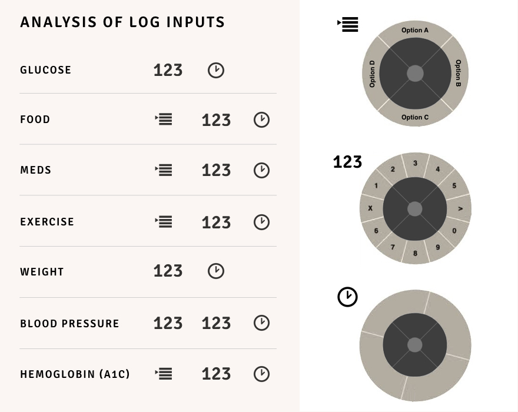
I began by analyzing the steps for making each type of log entry, which could be simplified to multi-select (which of several meds was taken, for example), quantitative input, and time entry (when the action occurred).
After trying a number of conventional ideas, I found a way to make circular controls for each input type, and pitched my cofounder on delightful animated transitions between them.
After trying a number of conventional ideas, I found a way to make circular controls for each input type, and pitched my cofounder on delightful animated transitions between them.
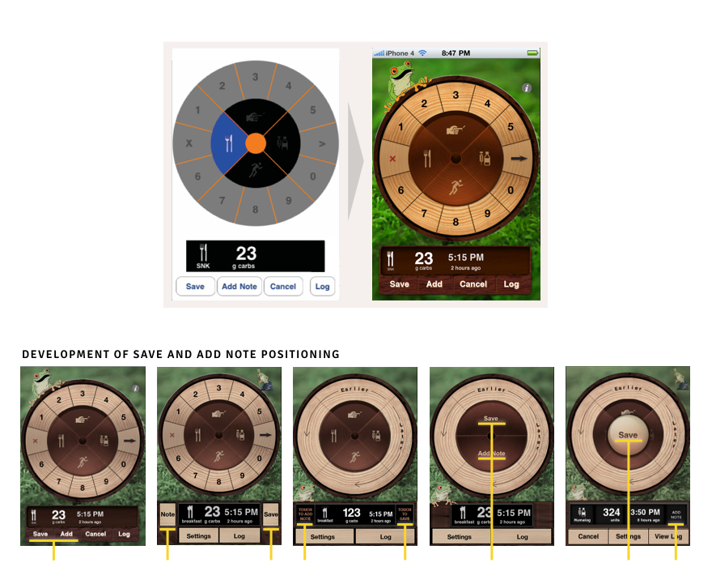
Working with an illustrator and another designer, we developed a visual style for the interface. It was important to my cofounder to avoid the color red — so reminiscent of stressful clinical situations — and stick to relaxing colors and forms.
I then explored every detail of the interface, including the positions and choreography of the Add Note and Save buttons, so crucial to an easy, fluid experience.
I then explored every detail of the interface, including the positions and choreography of the Add Note and Save buttons, so crucial to an easy, fluid experience.
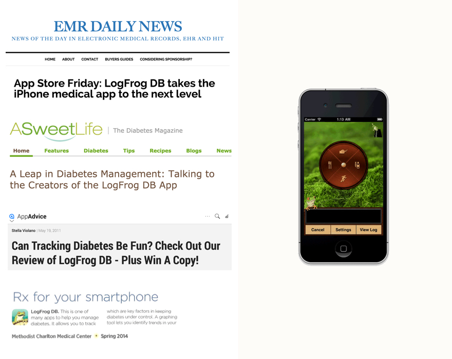

In November 2010, six months after beginning the project, our app was on the App Store. I wrote all the code, front and back end. My cofounder was happy.
And the app soon found an audience. We received positive write-ups in health blogs and hundreds of emails. In the years since we’ve refined details and added features.
And the app soon found an audience. We received positive write-ups in health blogs and hundreds of emails. In the years since we’ve refined details and added features.
I contributed to technology that helps nurses care for newborns.
2014–
Global Strategies, a non-profit dedicated to maternal and infant healthcare in the developing world, commissioned a unique app called Noviguide from a design/development agency I worked for. Part medical expert system, part dosage calculator, part instructional guide, it captures all the nuances of newborn medical protocol to ensure the highest standard of care. I led the creation of Noviguide, both as a UX designer and as lead developer. It is one of the most complex apps I have ever worked on — yet it looks like one of the simplest.
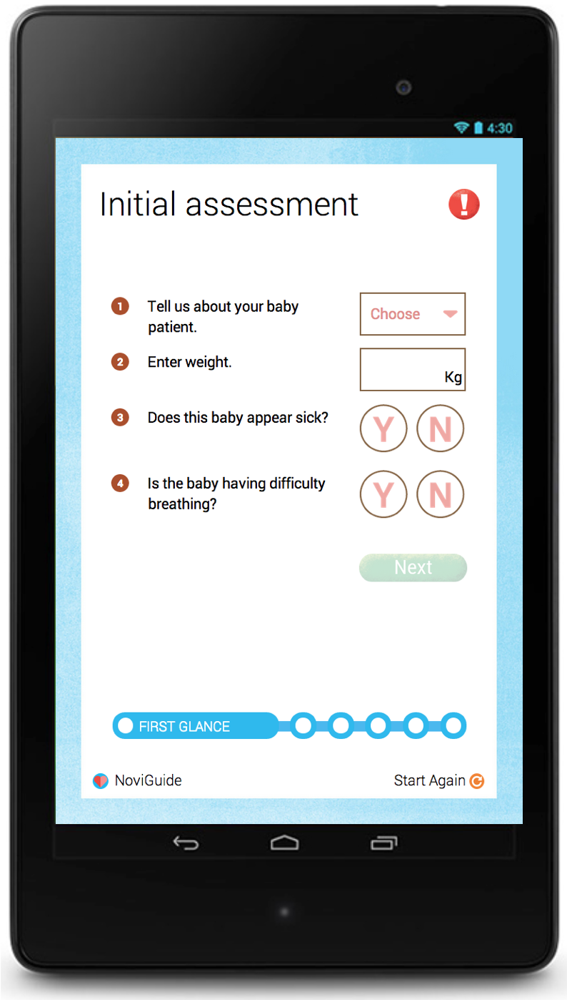
From years of work with neonatal clinics in sub-Saharan Africa, Global Strategies discovered a gap in medical care that technology could fill. Especially in rural areas, nurses often need to make care decisions without immediate access to a doctor.
Steps in the standard medical protocol are easily forgotten, and dosage calculations may require reference material that is hard to find or out of date.
Steps in the standard medical protocol are easily forgotten, and dosage calculations may require reference material that is hard to find or out of date.
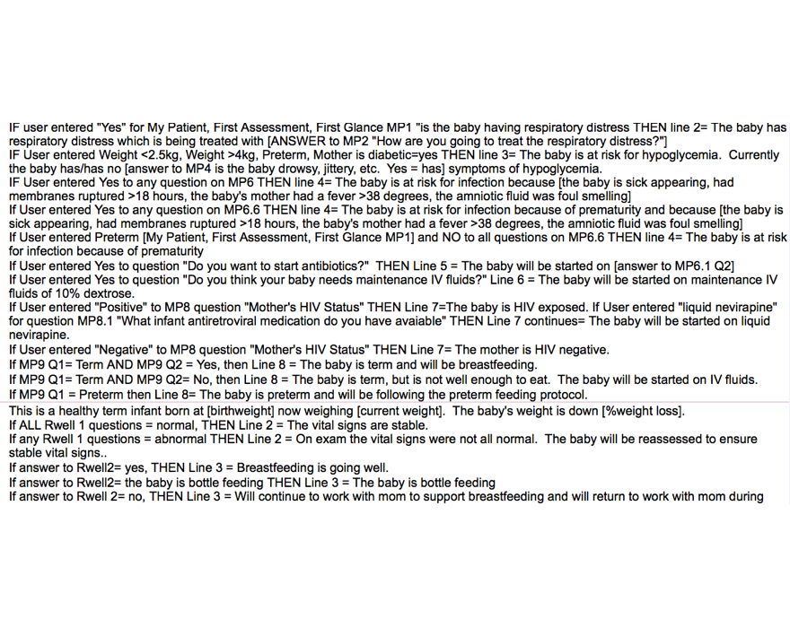
Digitizing a medical protocol is no easy task! The doctors we worked with provided dozens of flowcharts and thousands of lines of conditions describing the way the application they envisioned should work.
Translating all this raw material to computer code fell to me and a development team I managed. It was extremely challenging but ultimately successful.
Translating all this raw material to computer code fell to me and a development team I managed. It was extremely challenging but ultimately successful.
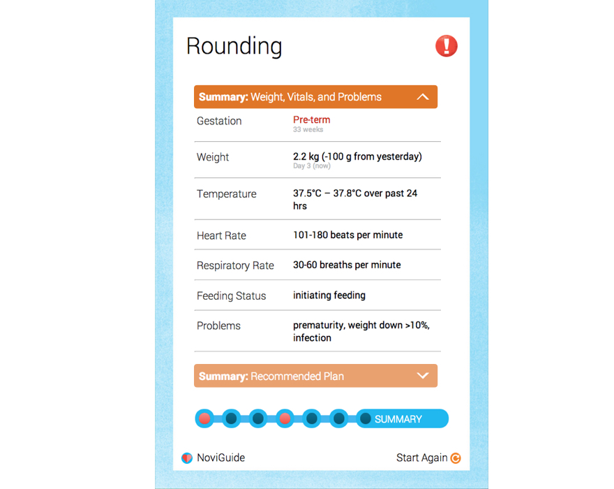
From all that complexity emerged a colorful, inviting user interface that the visual design team and I developed. One of my focuses was the summary page, where discussion with the neonatologist led to a two-part interface. I made it mirror the way doctors keep notes: first, observations and assessment of the patient, and then the intended treatment plan.
Noviguide has been well-received by clinics in South Africa and Uganda, where its effectiveness is being measured by medical researchers.
Noviguide has been well-received by clinics in South Africa and Uganda, where its effectiveness is being measured by medical researchers.
I reimagined an iPhone story-creation app for iPad.
2010
Blurb Mobile is an iOS app for weaving photos, videos, and audio into short, shareable multimedia stories. My main task was to adapt the iPhone version for the recently released iPad. I needed to create a design for the larger form factor, while adhering to the basic architecture and visual style of the original app. I also did most of the engineering work for the iPad adaptation.
One of the new interactions I most enjoyed creating was a swipeable toolbar used to toggle between view and edit mode.
One of the new interactions I most enjoyed creating was a swipeable toolbar used to toggle between view and edit mode.
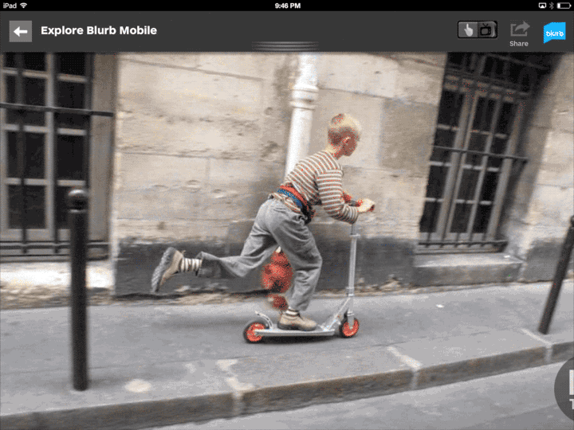
In adapting the app, I created a custom tab bar control for a more Blurb-branded feel and streamlined the interface. For example, detailed story metadata was hidden behind an info icon, which on the phone opened a separate metadata page. On the iPad, I could show the metadata in a translucent overlay animating out over the story thumbnails. Throughout, I needed to find ways to rethink groups of phone-sized pages, sometimes creating a combined page, other times embedding secondary pages in popovers displayed on the primary page.
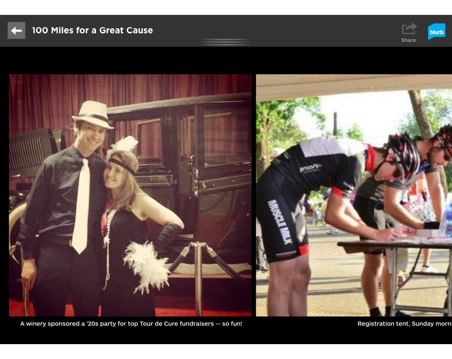
Blurb Mobile had hundreds of thousands of downloads and passionate users, but because the road to a business return was unclear, the company has since sunsetted the app. Thousands of brilliantly creative photo stories that people created, shared, and discovered on Blurb Mobile remain the legacy of this ambitious project from the peak of app mania.
I helped people create books through a simpler interface.
Spring 2012
Blurb offers several digital products to let people create professional print books. I worked on the “Instabook” product, aimed at casual bookmakers who want to quickly turn digital memories from Facebook or Instagram into printed keepsakes. The product hadn’t been updated after Facebook albums came into vogue, and usage had been below expectations. I was on the team tasked with finding ways to improve the experience. After several months of design and development, book completion (and revenue) went up and the project was considered a success.
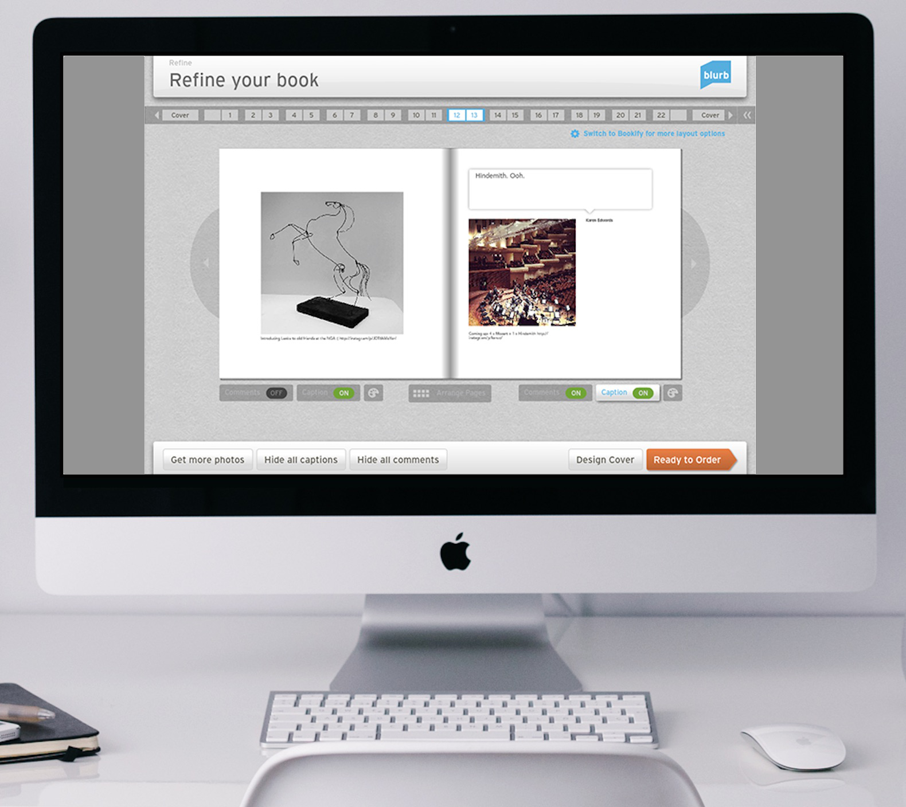
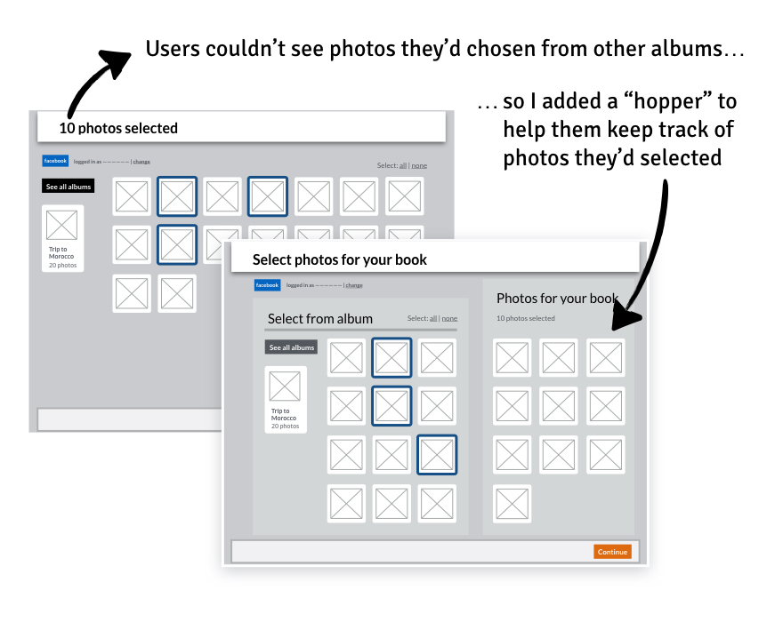
The product manager shared data showing that users were gathering photos from multiple Facebook albums, a use case that hadn’t been common when the interface was designed. A heuristic analysis suggested to us that as users went through their journey of selecting photos, they would lose track of photos they’d chosen from other albums. I proposed a “hopper” at the right, which would give users a rough preview of the book they were constructing and a feeling of progress. After a prototype tested well, we built it.
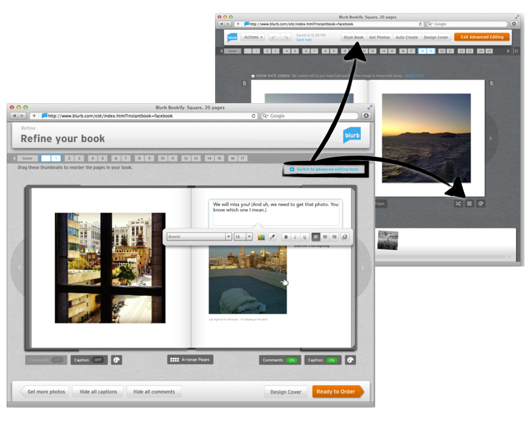
In discussions with the product manager and the Chief Product Officer, another observation came up — users were suffering “paralysis by analysis” when confronted with the many tools in the interface, and dropping off in the middle of creation. To speed them through, we put only the simplest controls in the main interface, and added a small “Switch to Advanced Editing” button at the upper right that launched a different mode (signaled by a different background) with more complex editing features.
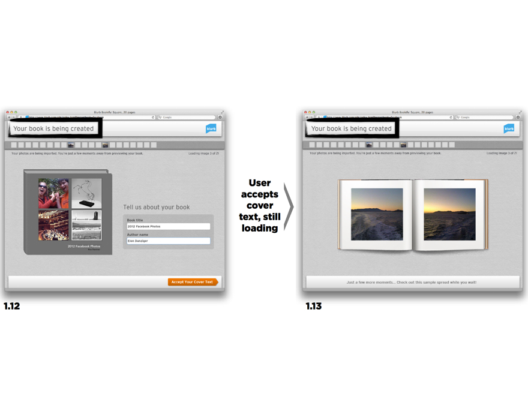
Finally, we knew users were dropping off during book creation, which could take a minute or two. I suggested using this downtime for a simple but essential step in the book process — adding a book title and author name, which we could let users preview as they typed. Afterward we could also show a sample spread while the book was generated, with a reassuring message below.
The net result of these changes was a better experience that improved conversions and helped more people preserve their digital memories in high-quality photo books.
The net result of these changes was a better experience that improved conversions and helped more people preserve their digital memories in high-quality photo books.